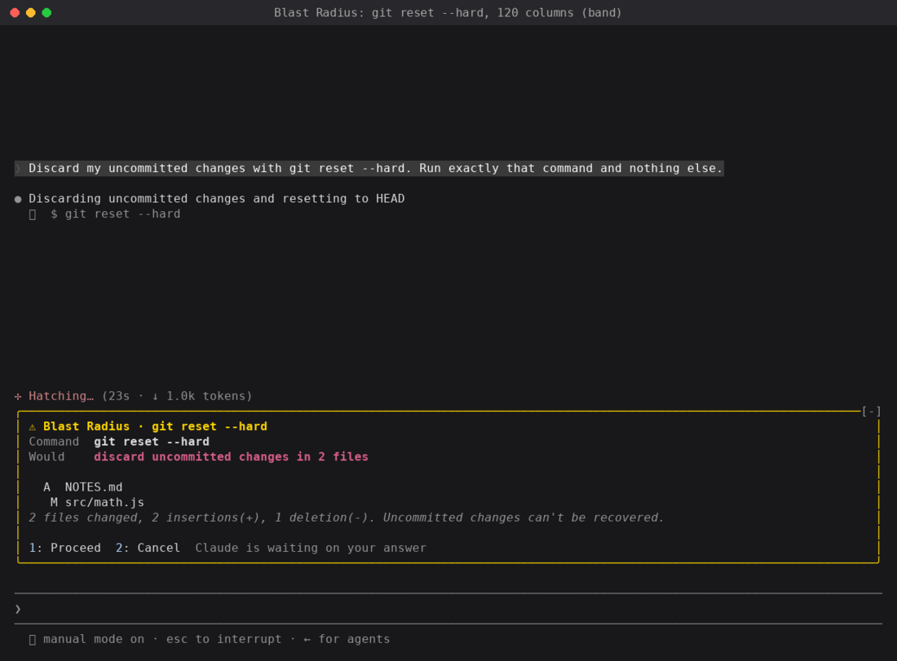
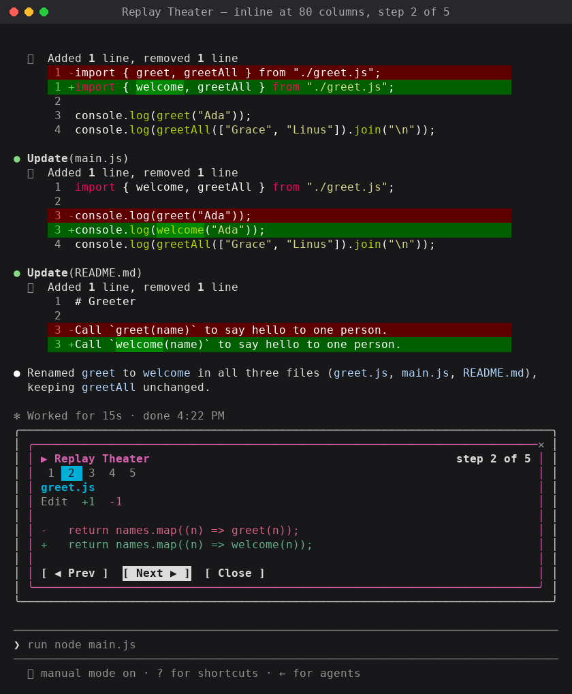

빈 폴더에서 첫 Claude Code 모드를 만들어 보고, 그다음 API로 또 무엇을 할 수 있는지 살펴본다.
Claude Code는 이미 동작 방식을 꽤 많이 바꿀 수 있다. 설정(settings), 권한 규칙, 슬래시 명령, 스킬, 상태 표시줄(status line)이 그렇다. 모드(mod)는 여기서 한 걸음 더 나아간다. 모드는 Claude Code가 하는 일을 고쳐 쓰거나 아예 교체할 수 있고, 커스텀 UI를 그릴 수도 있다. 내부적으로 모드는 훅(hook)이며, 플러그인(plugin) 안에 담겨 배포된다. 모드 하나하나는 세션 안에서 실행되며 일어나는 모든 이벤트를 그때그때 지켜보는 작은 JavaScript 또는 TypeScript 모듈이다.
그래서 모드는 Claude Code를 자신의 일하는 방식에 맞추는 수단이 된다. 늘 들여다보는 수치를 표시하는 판을 하나 붙일 수도 있고, 긴장되는 명령 앞에 가드를 세울 수도 있으며, 변경 사항을 자기 취향대로 읽기 위한 리뷰 화면을 만들 수도 있다.
이 가이드는 빈 폴더에서 모드 하나를 만든다. Token Weather, 프롬프트 위에 그려지는 컨텍스트 윈도우의 실시간 일기예보다. 80줄 정도다. 그다음 더 큰 모드 두 개, Blast Radius와 Replay Theater를 둘러보며 API로 또 무엇을 할 수 있는지 보여 준다.
Claude Code 2.1.287 이상이 필요하다. 모드는 기본으로 켜져 있으므로 따로 켤 것은 없다. API는 릴리스마다 바뀔 수 있다. Claude Code는 모드를 로드할 때마다 해당 빌드의 타입 선언을 모드의 .claude-plugin/types/ 폴더에 써 주며, 그것이 여러분 버전의 기준이다.
모드는 동작이 JavaScript 또는 TypeScript 모듈에 들어 있는 Claude Code 플러그인이다.
.claude-plugin/plugin.json 매니페스트를 가진 평범한 플러그인이다.hooks/hooks.json이 modules 아래에 모듈 하나를 지정한다.register(on, options)를 export한다. 그 안에서 on(event, matcher?, hook)이 훅을 추가한다.모든 훅은 같은 모양이다.
on("tool.call", { tool: "Bash" }, async ($, e, next) => {
// $ the mods API: ui, session, state, store, fs, process, clock, http, tool, command, model, ...
// e this event's input, as plain data
// next passes e to the other plugins and then to Claude Code's own behavior
return next(e);
});훅은 미들웨어처럼 체인(chain)을 이룬다. 여러분의 훅이 실행되고, next(e)가 이벤트를 다음 플러그인에 넘기며, 맨 아래에서 Claude Code가 원래 하려던 일을 한다. 훅은 세 가지 중 하나를 할 수 있다.
next(e)를 호출해 이벤트를 넘기고, 결과는 거꾸로 흘러 돌아온다. 응답하는 훅은 next를 호출하지 않고 반환한다. (원문의 다이어그램은 사이트에서 동적으로 그려지는 차트라 여기서는 텍스트로 옮겼다. 원문 보기)| 동작 | 방법 | 예시 |
|---|---|---|
| 관찰(Observe) | const r = await next(e); /* 살펴보기 */ return r | 모든 파일 편집을 기록한다. 매 턴이 끝날 때 수치를 읽는다. |
| 고쳐 쓰기(Rewrite) | return next({ ...e, command: safer }) | 체인의 나머지가 보는 내용을 바꾼다. |
| 응답(Answer) | next를 호출하지 않고 return { deny: "…" } | 도구 호출을 거부한다. 명령이나 도구를 직접 처리한다. |
이벤트는 도구 호출, 제출된 프롬프트, 턴의 시작과 종료, 세션의 시작과 종료, 슬래시 명령, 그리고 ui.render, 즉 인터페이스의 모든 조각이 그려지는 순간까지 아우른다. 모듈은 DOM도 Node도 없는 자체 샌드박스 안에서 실행되므로, 바깥 세계와의 모든 상호작용은 $를 거친다.
설정 훅(settings hook)과 다른 점. 설정 훅은 이벤트마다 셸 명령을 실행하고 stdin과 stdout으로 JSON을 주고받는다. 모드는 한 번 로드되면 세션에 계속 머문다. 상태를 유지할 수 있고, 이벤트가 일어날 때마다 갱신되는 UI를 그릴 수 있으며, Claude Code를 거꾸로 호출할 수도 있다. 창(pane)을 열고, 프로세스를 실행하고, 슬래시 명령을 등록하고, 모델이 호출할 수 있는 도구를 등록하는 식이다.
Claude Code 자신도 모드를 쓴다. AGENTS.md 지원과 대화 옆의 /diff 창을 비롯한 Claude Code의 일부 기능은 모드로 만들어져 있다. 테스트까지 포함한 소스가 공개 저장소 anthropics/claude-code의 mods/ 아래에 있으니, 팀이 모드를 어떻게 만드는지 읽어 볼 수 있다.
Token Weather는 매 턴이 끝난 뒤 컨텍스트 윈도우가 얼마나 찼는지 읽어서 프롬프트 위에 한 줄을 그린다. 날씨 아이콘, 퍼센트, 윈도우 대비 사용 토큰 수, 최근 턴의 작은 차트, 그리고 마지막 턴이 얼마나 더했는지가 들어간다.
| 사용량 | 예보 |
|---|---|
| 25% 미만 | ☀ Clear |
| 25–49% | ☁ Cloudy |
| 50–74% | ☂ Showers |
| 75–89% | ☇ Storm |
| 90% 이상 | ↯ Compact soon |
실제 세션에서의 모습이다. 턴마다 더 많은 파일을 읽고, 띠는 ☀ Clear에서 ☂ Showers를 거쳐 ☇ Storm으로 차오른다.
여섯 단계를 건너뛸 수도 있다. Claude Code는 모드를 작성하는 법을 알고 있으니, 원하는 모드를 설명하고 작업을 맡기면 된다. claude로 세션을 시작하고 아래 프롬프트를 붙여 넣자.
Make me a Claude Code mod called token-weather: a live forecast of my context window, shown in the band above the prompt.
What it should show, on one line:
- A weather icon and word for how full the context window is: under 25% ☀ Clear (yellow), 25–49% ☁ Cloudy (cyan), 50–74% ☂ Showers (blue), 75–89% ☇ Storm (magenta), 90% and up ↯ Compact soon (red).
- The percentage used, then the tokens used out of the window, like "134.4k / 200k".
- A small chart of the last 12 turns, drawn with ▁▂▃▄▅▆▇█.
- How much the last turn added, like "▲ +98.3k last turn".
It should update after every turn.Claude가 세션에 핫 리로딩(hot reloading)을 켤지 한 번 묻는다. 허용하면 Claude의 턴이 끝날 때 프롬프트 위에 띠가 나타난다. 그 뒤로는 모든 변경이 제자리에서 리로드되므로, 계속 수정을 요청하면서("Storm을 70%부터 시작하게 해 줘", "끝에 달러 비용을 붙여 줘") 띠가 바뀌는 걸 지켜볼 수 있다. 이 모드는 이번 세션에만 로드되며 폴더는 나중에 정리되므로, 남겨 두려면 폴더를 복사해 두고 여느 플러그인처럼 설치하면 된다(6단계).
프롬프트가 보고 싶은 것만 설명한다는 점에 주목하자. 모드를 쓰기 위해 API를 알 필요는 없다. Claude Code에 내장된 모드 작성 가이드가 "어떻게"를 다룬다. 리로드 뒤에도 살아남도록 상태를 어디에 둘지, claude plugin validate로 플러그인을 어떻게 검사할지, 어떤 이벤트에 훅을 걸지 같은 것들이다. "What it should show" 줄들을 바꾸면 그건 우리 모드가 아니라 여러분의 모드가 된다.
어떻게 조립되는지 먼저 보고 싶거나 Claude가 쓴 것을 검토하고 싶다면 계속 읽어 보자.
Claude Code가 충분히 새 버전인지 확인한다.
claude --version # 2.1.287 or later다음 구조를 만든다.
token-weather/
├── .claude-plugin/
│ ├── plugin.json
│ └── types/ (written by Claude Code when it loads the mod)
├── hooks/
│ ├── hooks.json
│ └── token-weather.mjs
├── types/
│ └── index.d.ts (added in step 3)
└── tests/
└── token-weather.test.ts (added in step 5).claude-plugin/plugin.json은 표준 플러그인 매니페스트다.
{
"name": "token-weather",
"version": "0.1.0",
"description": "A live forecast of the context window, drawn above the prompt.",
"author": { "name": "You" }
}hooks/hooks.json은 모듈을 가리킨다. 모드에는 정확히 하나가 있다.
{
"modules": ["./token-weather.mjs"]
}프롬프트 바로 위의 띠는 AbovePrompt라는 컴포넌트다. Claude Code는 거기에 아무것도 직접 그리지 않으므로 첫 목표로 알맞다. 그 ui.render 이벤트에 훅을 걸고 요소 트리를 반환한다.
// hooks/token-weather.mjs
export function register(on) {
on("ui.render", { component: "AbovePrompt" }, ($, e, next) => {
const { Box, Text } = $.ui.resolve(e);
return Box({
paddingX: 1,
children: [Text({ color: "yellow", bold: true, children: "☀ Clear skies" })],
});
});
}요소는 전역이 아니다. Claude Code가 그리는 표면(surface)마다 지원하는 요소 집합이 조금씩 다르기 때문에, $.ui.resolve(e)가 지금 그려지는 표면용 생성자를 돌려준다. h를 팩토리로 삼으면 JSX도 된다.
플러그인을 로드한 채 세션을 시작한다.
claude --plugin-dir ./token-weather프롬프트 위에 "☀ Clear skies"가 나타난다. 세션은 열어 두자. 폴더가 감시되고 있어서 저장할 때마다 재시작 없이 모듈이 제자리에서 리로드된다. 이 빠른 피드백 루프가 모드 작성을 재미있게 만드는 요소의 대부분이다.
$.state에 보관하기$.session.usage()는 상태 표시줄과 같은 수치를 돌려준다. context.tokens는 마지막 응답이 답한 입력량이고, context.window는 모델의 윈도우이며, context.percent는 둘의 비율이다. 이 호출은 공짜다. breakdown을 요청할 때만 토큰 집계 요청을 보낸다.
세션이 시작될 때와 매 턴이 끝난 뒤 수치를 읽는다.
on("session.start", async ($, e, next) => {
const result = await next(e);
await takeReading($);
return result;
});
on("turn.complete", async ($, e, next) => {
const result = await next(e);
if (!e.agentId) {
await takeReading($); // main-loop turns only, not subagents
}
return result;
});두 훅 모두 next(e)를 먼저 호출한 뒤 관찰한다. 어느 쪽도 일어나는 일을 바꾸지 않는다.
수치를 어디에 둘 것인가. 모듈 수준의 let readings = []가 당연한 선택처럼 보이지만, 핫 리로드는 새로 로드하는 것이다. register가 다시 실행되고, session.start가 다시 발생하며, 모듈 변수는 처음부터 시작한다. 대신 이력을 $.state에 두자. 이름 붙은 값을 세션 내내 호스트가 보관하며, 리로드에도 살아남는다.
// Held by the host, so the history survives a hot reload of this file.
const readings = { plugin: "token-weather", key: "readings" };
async function takeReading($) {
const { context } = await $.session.usage();
if (!context?.window) return;
const tokens = context.tokens ?? 0;
const percent = context.percent ?? Math.round((tokens / context.window) * 100);
const { value: history = [] } = await $.state.get(readings);
await $.state.set(readings, [...history, { tokens, window: context.window, percent }].slice(-HISTORY));
}상태 값은 플러그인의 타입 계약(type contract)에 선언한다. 매니페스트가 가리키는 작은 .d.ts 파일이다. types/index.d.ts를 추가한다.
export type TokenWeatherReading = { tokens: number; window: number; percent: number };
declare module "claude-code" {
interface PluginState {
"token-weather": { readings: TokenWeatherReading[] };
}
}그다음 plugin.json에 "types": "./types/index.d.ts"를 추가한다. 이 단계를 건너뛰면 claude plugin validate가 고칠 방법을 알려 주는 오류로 멈춰 세운다. token-weather.readings is not declared: the manifest's types contract must name it in interface PluginState { … }.
그 대가로 다시 그리기는 공짜로 얻는다. 렌더 훅이 실행되는 동안 $.state.get을 호출하면 그 드로잉이 구독되므로, 이후의 모든 $.state.set이 띠를 다시 그린다. $.ui.invalidate를 호출할 일은 없다.
모듈 전체는 다음과 같다.
// Token Weather: a live forecast of the context window, above the prompt.
const HISTORY = 12;
const BARS = "▁▂▃▄▅▆▇█";
const FORECAST = [
{ upTo: 25, icon: "☀", word: "Clear", color: "yellow" },
{ upTo: 50, icon: "☁", word: "Cloudy", color: "cyan" },
{ upTo: 75, icon: "☂", word: "Showers", color: "blue" },
{ upTo: 90, icon: "☇", word: "Storm", color: "magenta" },
{ upTo: Infinity, icon: "↯", word: "Compact soon", color: "red" },
];
// Held by the host, so the history survives a hot reload of this file.
const readings = { plugin: "token-weather", key: "readings" };
export function register(on) {
on("session.start", async ($, e, next) => {
const result = await next(e);
await takeReading($);
return result;
});
on("turn.complete", async ($, e, next) => {
const result = await next(e);
if (!e.agentId) {
await takeReading($); // main-loop turns only, not subagents
}
return result;
});
on("ui.render", { component: "AbovePrompt" }, async ($, e, next) => {
const { value: history = [] } = await $.state.get(readings);
if (e.props.hasSurvey || history.length === 0) {
return next(e);
}
const { Box, Text } = $.ui.resolve(e);
return band(Box, Text, history, e.props.bodyColumns);
});
}
async function takeReading($) {
const { context } = await $.session.usage();
if (!context?.window) return;
const tokens = context.tokens ?? 0;
const percent = context.percent ?? Math.round((tokens / context.window) * 100);
const { value: history = [] } = await $.state.get(readings);
await $.state.set(readings, [...history, { tokens, window: context.window, percent }].slice(-HISTORY));
}
function band(Box, Text, history, columns) {
const now = history[history.length - 1];
const f = FORECAST.find((b) => now.percent < b.upTo);
const parts = [
Text({ color: f.color, bold: true, children: `${f.icon} ${f.word}` }),
Text({ children: ` ${now.percent}% of context` }),
Text({ dimColor: true, children: ` ${short(now.tokens)} / ${short(now.window)}` }),
];
if (columns >= 60) {
parts.push(Text({ dimColor: true, children: " last turns " }));
parts.push(Text({ color: f.color, children: sparkline(history) }));
if (history.length > 1) {
parts.push(Text({ dimColor: true, children: trend(history) }));
}
}
return Box({ flexDirection: "row", paddingX: 1, children: parts });
}
function sparkline(history) {
const top = Math.max(...history.map((r) => r.tokens), 1);
return history.map((r) => BARS[Math.floor((r.tokens / top) * (BARS.length - 1))]).join("");
}
function trend(history) {
const delta = history[history.length - 1].tokens - history[history.length - 2].tokens;
if (delta === 0) return " steady";
return delta > 0 ? ` ▲ +${short(delta)} last turn` : ` ▼ ${short(-delta)} last turn`;
}
function short(n) {
if (n >= 1_000_000) return `${+(n / 1_000_000).toFixed(1)}M`;
if (n >= 1_000) return `${+(n / 1_000).toFixed(1)}k`;
return String(n);
}자신의 모드에 베껴 갈 만한 세부 사항이 셋 있다.
e.props에 있다. hasSurvey는 설문이 띠를 쓰고 싶어 한다는 뜻이므로, 훅은 next(e)로 양보한다. bodyColumns는 띠의 실제 너비인데, 대화 옆에 창이 도킹돼 있는 동안은 터미널보다 좁다. 트리 크기를 여기에 맞추자. e의 최상위에는 e.component, e.surface, e.requestId, e.viewport만 있다.next(e)를 반환하면 띠를 Claude Code와 다른 모드에 돌려준다.파일을 저장하면 실행 중인 세션이 바로 반영한다. 큰 파일을 읽는 턴을 몇 번 거치면, 이 절 첫머리의 녹화처럼 띠가 Clear에서 Showers를 거쳐 Storm으로 움직인다.
claude plugin validate는 Claude Code가 할 방식 그대로 매니페스트와 모듈 소스를 읽고, 모듈이 어떤 훅을 걸고 무엇을 호출하는지 보고한다.
$ claude plugin validate ./token-weather
> types ./types/index.d.ts declares state: token-weather.readings
> ./token-weather.mjs hooks: session.start, turn.complete, ui.render{component=AbovePrompt}
> ./token-weather.mjs calls: $.session.usage (via takeReading), $.state.get, $.state.set (via takeReading), $.ui.resolve
> ./token-weather.mjs state writes: token-weather.readings
> ./token-weather.mjs state reads: token-weather.readings
√ Validation passedclaude plugin test는 플러그인의 *.test.ts 파일들을 실제 Claude Code 런타임에 대고 실행한다. 테스트가 on으로 등록하는 훅은 체인에서 모드 뒤에 실행되며 Claude Code가 답할 내용을 스텁(stub)하므로, $.session.usage()가 무엇을 반환할지 정확히 제어할 수 있다.
// tests/token-weather.test.ts
import { describe, expect, test } from "claude-code/testing";
describe("token-weather", () => {
test("the band follows the context window", async ($, on) => {
// Hooks registered here run after the mod and stub what Claude Code would answer.
let tokens = 36_100;
on("session.start", ($, e) => ({ cwd: e.cwd }));
on("session.usage", () => ({
value: { startedAt: 0, rateLimits: [], context: { tokens, window: 200_000, percent: Math.round(tokens / 2_000) } },
}));
on("turn.complete", () => ({ text: "" }));
await $.session.start({ surface: "terminal", isInteractive: true, cwd: "/work" } as any);
const ui = await $.ui.mount({
plugin: "token-weather",
surface: "terminal",
component: "AbovePrompt",
props: { hasSurvey: false, isWorking: false, maxRows: 10, bodyColumns: 120 },
} as any);
expect(await ui.find({ type: "Text", text: /Clear/ })).toBeDefined();
tokens = 134_400;
await $.turn.complete({ reason: "answer", answer: "ok", durationMs: 1 } as any);
expect(await ui.find({ type: "Text", text: /Showers/ })).toBeDefined();
expect(await ui.find({ type: "Text", text: /67% of context/ })).toBeDefined();
expect(await ui.find({ type: "Text", text: /▲ \+98\.3k last turn/ })).toBeDefined();
await ui.unmount();
});
});$ claude plugin test ./token-weather
(pass) token-weather > the band follows the context window
1 pass
0 fail이 테스트는 3단계의 다시 그리기 동작도 확인한다. 모드가 다시 그려 달라고 한 번도 요청하지 않았는데 turn.complete 뒤에 띠가 갱신된다.
모드는 플러그인이므로 같은 방식으로 배포한다. 마켓플레이스에 넣으면 되는데, .claude-plugin/marketplace.json이 있는 폴더 하나면 충분하다.
{
"name": "my-mods",
"owner": { "name": "You" },
"plugins": [{ "name": "token-weather", "source": "./token-weather" }]
}claude plugin marketplace add ./my-mods
claude plugin install token-weather@my-mods --scope user모드는 Claude Code 플러그인이므로 다른 플러그인과 똑같이 공유하며, 새로 배울 것은 없다. 마켓플레이스 파일과 함께 모드를 GitHub 저장소에 올리면 그 저장소가 여러분의 마켓플레이스가 된다. 누구나 거기서 설치할 수 있고, 평범한 push로 업데이트할 수 있다.
설치는 Claude Code 안에서 명령 세 개면 된다.
/plugin marketplace add your-org/my-mods
/plugin install token-weather@my-mods
/reload-plugins리로드하면 모드가 시작된다. 나타나지 않으면 Claude Code를 재시작하자.
모드는 여러분의 컴퓨터에서 Claude Code 안에 실행되는 코드이며, Claude Code와 같은 접근 권한을 가진다. 그리고 Anthropic이 아니라 게시자가 작성한 것이다. 그러니 패키지를 설치할 때처럼 모드를 설치하자. 먼저 저장소를 읽고, 신뢰하는 사람의 것만 설치한다. 명령을 실행하기 전까지는 아무것도 설치되지 않는다.
Claude 디렉터리는 모드가 포함된 플러그인을 받으며, claude.ai/directory/manage에서 제출할 수 있다. 그러면 여러분이 링크를 주지 않아도 사람들이 찾을 수 있다.
Token Weather는 지켜보고 그리기만 한다. 다음 두 모드는 이벤트에 끼어들고, 창을 열고, 입력을 받는다.
Claude가 rm -rf, git reset --hard, git clean, force push, 또는 데이터베이스 마이그레이션으로 Bash를 호출하면 Blast Radius가 그 호출을 붙잡는다. 명령이 무엇을 건드릴지 계산해서 Proceed와 Cancel이 있는 창을 연다. 2를 누르면 Claude는 사유가 담긴 거부를 받는다. 1을 누르면 명령이 쓰인 그대로 실행된다.
훅 세 개를 쓴다. Bash에 대한 tool.call, 그리고 Pane과 AbovePrompt에 대한 ui.render다. 핵심은 위 표의 "응답" 동작이다.
on("tool.call", { tool: "Bash" }, async ($, e, next) => {
const risk = classify(String(e.command ?? ""));
if (risk === null) return next(e); // everything else runs as normal
const report = await measure($, risk, await $.session.cwd()); // git status, git clean -n, du, ...
held = { command: e.command, risk, report, decision: null };
const opened = await $.ui.open({ id: "blast-radius", title: "Blast Radius", focus: true });
if (!opened.isPlaced) held.where = "band"; // too narrow for a pane: draw above the prompt
while (held.decision === null && !next.signal.aborted) {
await $.process.run(["sleep", "0.25"]); // time inside $ calls doesn't count against the hook's time limit
}
if (held.decision === "proceed") return next(e); // let it run
return { deny: `Blast Radius held this command: the user pressed Cancel. It would have: ${report.summary}.` };
});여기서 배울 점:
$.process.run. 보고서는 도구 자체의 명령에서 나온다. git status --porcelain, git clean -n, git log HEAD..origin/main, showmigrations. 인자는 argv 배열로 들어가므로 경로 안의 어떤 것도 셸 코드로 실행되지 않는다.$ 호출 안에서 기다리는 시간은 계산되지 않는다. 루프는 버튼의 onPress가 결정을 세팅할 때까지 짧은 sleep 프로세스를 기다리고, next.signal이 중단되면(Esc를 눌렀을 때) 포기한다.Button({ label: "Proceed", hotkey: "1", onPress })는 클릭으로도, Tab과 Enter로도, 숫자 키로도 동작한다.$.ui.open이 isPlaced: false를 답하면 같은 보고서를 프롬프트 위에 그린다.
이것은 안전망이지 권한 시스템이 아니다. 명령 텍스트를 읽기 때문에 $(…), alias, rm을 호출하는 스크립트는 통과한다. 확실히 막으려면 권한 규칙을 쓰자.
턴이 실행되는 동안 Replay Theater는 모든 Edit과 Write 호출을 기록한다. 파일과 전후 텍스트다. 턴이 끝나면 프롬프트 위에 힌트가 나타난다. r을 누르면(또는 /replay를 입력하면) 창이 편집을 diff 하나씩 걸어가며 보여 주는데, 번호가 붙은 단계 띠와 Prev, Next, Close 버튼이 있다.
편집을 막거나 바꾸는 일은 결코 없다. 관찰만 한다.
on("tool.call", async ($, e, next) => {
if (EDIT_TOOLS.has(e.tool)) state.pending.push(...(await stepsFor($, e))); // old/new text → diff
return next(e); // the edit runs untouched
});
on("turn.start", ($, e, next) => { if (!e.agentId) state.pending = []; return next(e); });
on("turn.complete", async ($, e, next) => {
const r = await next(e);
if (!e.agentId && state.pending.length) state.replay = state.pending; // one replay per turn
return r;
});
on("session.start", async ($, e, next) => {
const r = await next(e);
await $.command.register({ name: "replay", description: "Step through the last turn's file edits" });
return r;
});
on("command.run", { command: "replay" }, async ($, e) => ({ text: (await openReplay($)) ? "Replaying" : "No edits" }));여기서 배울 점:
turn.start와 turn.complete가 편집들을 턴당 하나의 리플레이로 묶고, e.agentId가 서브에이전트 턴을 묶음에서 제외한다.session.start에서 $.command.register를 호출하고, command.run에서 응답한다.$.fs.read로 이전 내용을 가져오므로 diff가 실제와 같다.
.claude-plugin/types/ 폴더에 써 주므로, 에디터와 tsc -p가 추가 작업 없이 동작한다. 모든 이벤트, $의 모든 메서드, 모든 요소의 props에 대한 참고 자료다.e.props에서 읽어라. hasSurvey, bodyColumns를 비롯한 나머지는 e 자체가 아니라 거기에 있다.register와 session.start가 다시 실행되므로, 데이터는 모듈 변수가 아니라 $.state에 두자.claude --debug를 실행하고, 훅이 검증을 통과하지 못하는 트리를 반환했다는 줄을 찾자.여기 소개한 세 모드는 각각 질문 하나에서 나왔다. 내 컨텍스트는 얼마나 찼지?, 이 명령은 무엇을 지우려는 거지?, Claude가 방금 무엇을 바꿨지? 여러분의 질문은 다를 것이고, 바로 그게 핵심이다. 출발점으로 삼을 만한 아이디어 몇 가지:
$.session.usage()로 만든 비용 또는 rate limit 미터를 $.ui.status로 상태 표시줄에prompt.submit 훅$.ui.toast로 토스트를 보내는 집중 타이머terraform apply처럼 자신의 스택에 맞춘 tool.call 가드이제 매일 쓰는 모드를 만들었는가? 실행 중인 모습을 GIF나 스크린샷으로 담아 X나 LinkedIn에 올리면 다른 개발자들이 무엇이 가능한지 볼 수 있다. 플러그인을 마켓플레이스에 넣고(모드 공유하기) 링크를 걸면, 마음에 든 사람 누구나 명령 세 개로 설치할 수 있다.